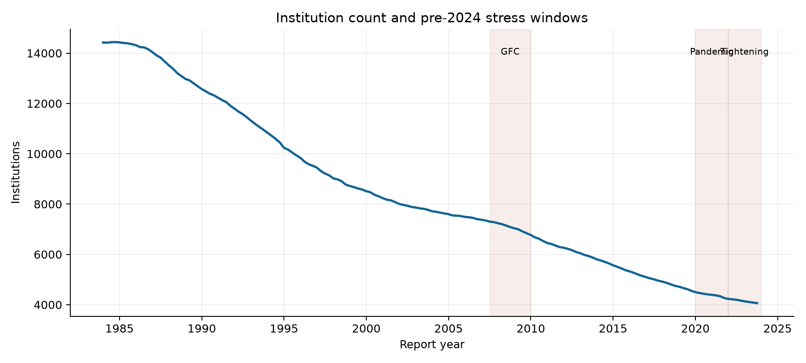
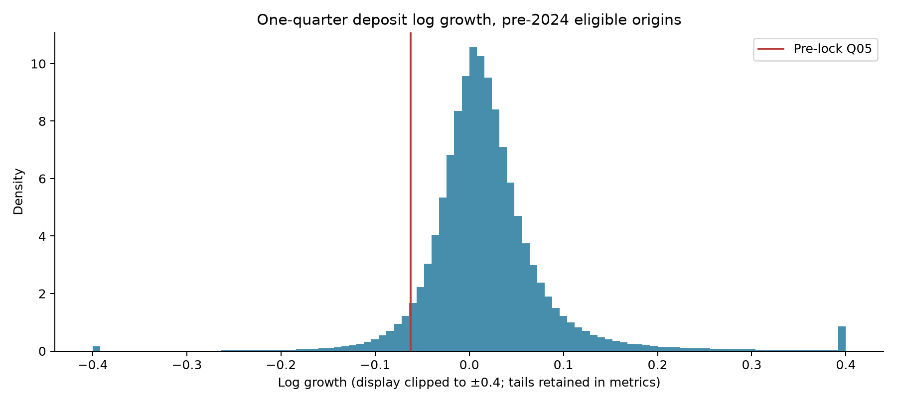
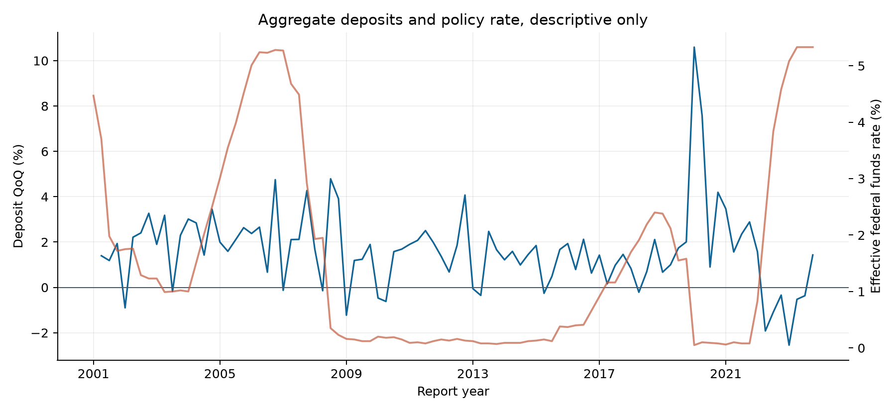

Only origins through 2023Q4 enter these descriptive target analyses. The final 2024+ outcome period remained locked during feature and model specification.


| Period | Bank quarters | Banks | 1Q Q01 | 1Q Q05 | 1Q median | M&A affected |
|---|---|---|---|---|---|---|
| pre_gfc | 186,420 | 9,072 | -0.128 | -0.059 | 0.015 | 10,069 |
| gfc | 71,037 | 7,481 | -0.142 | -0.069 | 0.014 | 3,301 |
| pandemic | 35,169 | 4,529 | -0.097 | -0.040 | 0.030 | 1,629 |
| tightening | 33,185 | 4,264 | -0.132 | -0.070 | 0.002 | 1,169 |

5,843 one-quarter changes exceeded |log(2)| before 2024. 1,438 overlapped the preregistered M&A window; 4,405 require economic or case-specific review and were not deleted as errors.
Associations shown here are descriptive, not causal. Coverage shifts and changing bank composition limit raw period comparisons. Macro series use FRED current values for this historical display; vintage-aware variants are evaluated separately.
Quarterly aggregate data are in data_coverage; source calculations are in artifacts/eda_prelock_quarterly.parquet and data/manifests/eda_prelock.json.